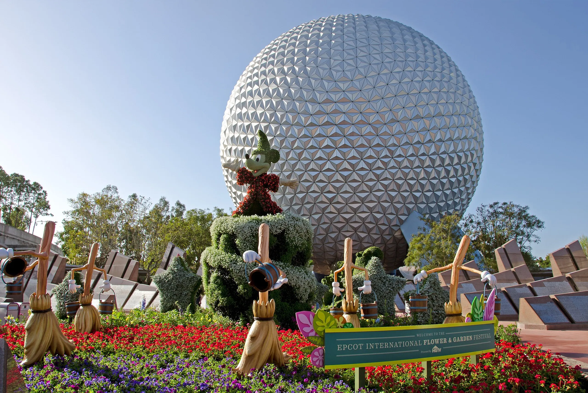

EPCOT
Publicado el 15 de Mayo, 2025
EPCOT es un parque único dentro de Disney que combina la exploración tecnológica con la cultura global. Se divide en dos grandes áreas: Future World, dedicado a la innovación y la tecnologÃa, y World Showcase, que presenta pabellones temáticos de 11 paÃses con arquitectura, gastronomÃa y espectáculos tradicionales.
En Future World, podés descubrir atracciones como Spaceship Earth y Test Track, que muestran avances cientÃficos y tecnológicos de manera divertida y educativa. En World Showcase, es posible recorrer el mundo en un solo dÃa, disfrutando de comidas tÃpicas, artesanÃas y eventos culturales.

EPCOT es ideal para visitantes que buscan una experiencia más adulta y educativa, pero sin perder el toque de diversión. También es famoso por sus festivales anuales, como el Festival de Flores y Jardines o el Festival de Comida y Vino, que atraen a visitantes de todas partes.
Este parque ofrece una perspectiva diferente de Disney, enfocándose en el aprendizaje, la cultura y la innovación, y es una visita obligada para quienes quieren algo más que los clásicos cuentos de hadas.
🢠Atracciones imperdibles
Spaceship Earth: Un viaje dentro de la icónica esfera para conocer la historia de la comunicación humana.
Test Track: Acelerá en un simulador de pruebas de autos con tecnologÃa avanzada.
World Showcase: Recorré pabellones temáticos de 11 paÃses con comida, cultura y espectáculos tradicionales.
📹 Video recomendado: Festival de Flores y Jardines
🎟️ Datos útiles
- 📠Ubicación: Orlando, Florida
- 🕒 Horarios: Todos los dÃas de 9:00 a 21:00 hs
- 🉠Eventos especiales: Festival de Flores y Jardines, Festival de Comida y Vino
- 💳 Tip: Reservá con anticipación y usá la app de Disney para optimizar tu visita
↠Volver al inicioEPCOT es una mezcla perfecta de innovación, cultura y gastronomÃa, ideal para quienes buscan una experiencia distinta en Disney, llena de aprendizaje y entretenimiento.